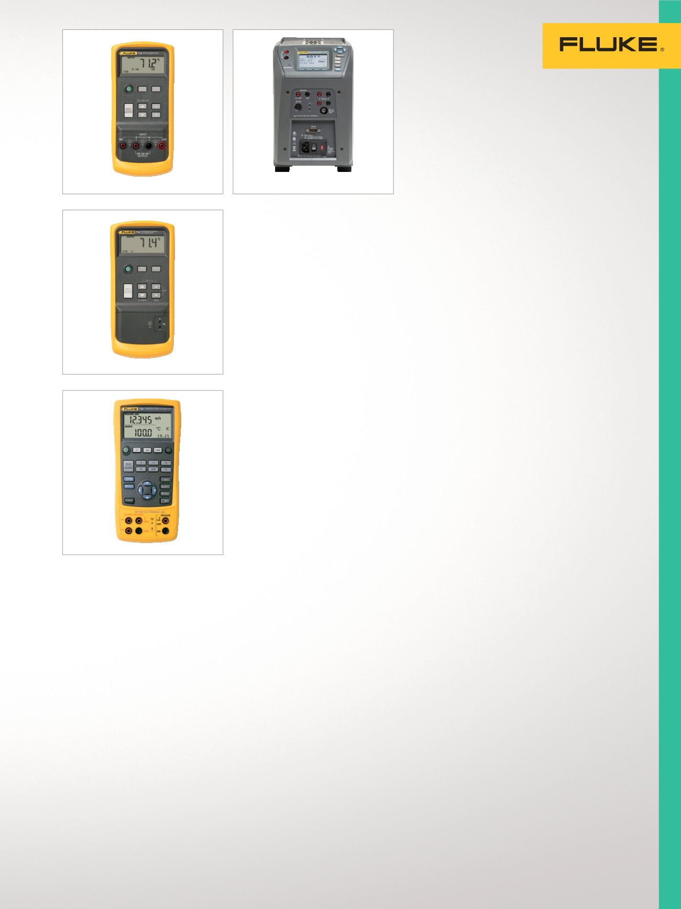

17
Temperature Calibration
Handheld
Temperature
Calibrators
Suitable for calibrating
temperature transmitters,
panel meters, and other
devices that connect to
temperature sensors.
712 RTD Process Calibrator
Delivers outstanding performance,
durability and reliability in a
compact, lightweight, and easy-
to-carry tool.
•
Measure temperature from RTD
probe output
•
Simulate RTD output
•
Measure additional RTDs using
ohms measurement function
•
Simulate additional RTDs using
ohms source function
•
NIST traceable calibration
714 Thermocouple
Calibrator
Delivers outstanding performance,
durability and reliability in a
compact, lightweight, and easy-
to-carry device.
•
Measure temperature from TC
probe output
•
Simulate TC output
•
Calibrate linear TC transmitter
with mV source function
•
NIST traceable calibration
724 Temperature Calibrator
Powerful and easy to use to
measure and source functions for
testing and calibrating almost any
temperature instrument.
•
Measure RTDs, thermocouples,
ohms, and volts to test sensors
and transmitters
•
Source/simulate thermocouples,
RTDs, volts, and ohms to cali-
brate transmitters
•
Perform fast linearity tests with
25 % and 100 % steps
•
NIST traceable calibration
Multifunction
Field Temperature
Sources
Fast, lightweight and
portable with precision
temperature control
traceable to national
standards. Suitable for
calibration of thermocouples,
RTDs, PRTs, and other
temperature sensors.
9142 Field Metrology Well
Maximizing portability, speed,
and functionality for the indus-
trial process environment.
•
–25 °C to 150 °C temperature
range
•
Display accuracy of ± 0.2 °C
over full range
•
Built-in two-channel readout
for PRT, RTD, thermocouple,
4-20 mA current
•
Optional built-in reference
thermometer readout
•
Accredited calibration
9143 Field Metrology Well
Maximizing portability, speed,
and functionality for the indus-
trial process environment.
•
33 °C to 350 °C temperature
range
•
Display accuracy of ± 0.2 °C
over full range
•
Built-in two-channel readout
for PRT, RTD, thermocouple,
4-20 mA current
•
Optional built-in reference
thermometer readout
•
Accredited calibration
9144 Field Metrology Well
Precision calibration with fast
temperature ramp-up rates for the
industrial process environment.
•
50 °C to 660 °C temperature
range
•
Heat to 660 °C in 15 minutes
•
Display accuracy from
± 0.35 °C at 420 °C to
± 0.5 °C at ± 660 °C
•
Optional built-in reference
thermometer readout
•
Accredited calibration
712
724
9142/9143/9144
714